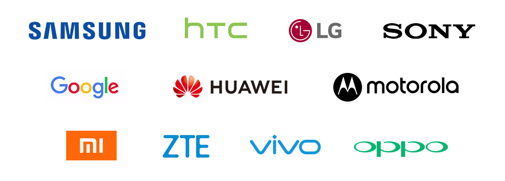
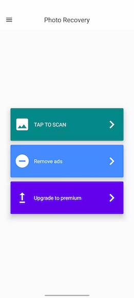

The Free Android App for Photo Recovery
When we say it's free, it's 100% free.
- No Pop-up Ads
- No Feature Limitation
- No Trying Before Paying
- No Privacy Risks
Recover Android Photos No Matter How You Lost Them
- By Accident
- Accidentally deleted or lost your precious photos of your family or loved ones?
- Water Damage
- Texting on the toilet or taking a photo of your fish? Your phone may have water damage.
- Physical Damage
- Phone screen broken because of a fall-down or a crash. Data gone after screen replacement.
- Failed Root
- Phone data got lost after you failed to root your Android phone.
Recover Android Photos Whatever Your Devices
It works perfectly with Samsung, HTC, LG, Sony, Google, HUAWEI, Motorola, ZTE, Xiaomi, Vivo, Oppo, and more mobile models, and on the latest Android OS.

From Google Play Store
The Super-Easy-to-Use Android App for Photo Recovery
- Scan
- Preview
- Recover
Other Exclusive Features Make the Free App Stands Out

- Various Picture Files Types from All Android Brands
- Easily recovers JPG/JPEG, PNG from Android phones of any brands.
- No need for Root or Computer
- You don't need to root your Android device or use a computer to recover your lost photos.
- Internal and External Recovery
- The app can retrieve the lost pictures from Android phones or tablets' internal storage or the external memory card.
Superb App....Hats Off developers.. Does what it says... Make some more beautiful and power apps like this which does not require Root access... Thanks allot..you guys rock..😀
-- kgomotso Tshimologo
Absolutely loved it with only one exception it showed me the beginning picture of the videos I had also hoped to bring back but only those pictures not the video. Still solid app guys.
-- Ronold Albert
I thought I lost my pictures FOREVER. So I asked Google on how can I recover my pictures? and as Always pointed me in the right direction. Thank you Google. I Highly recommend this App.
-- Trine Larsen